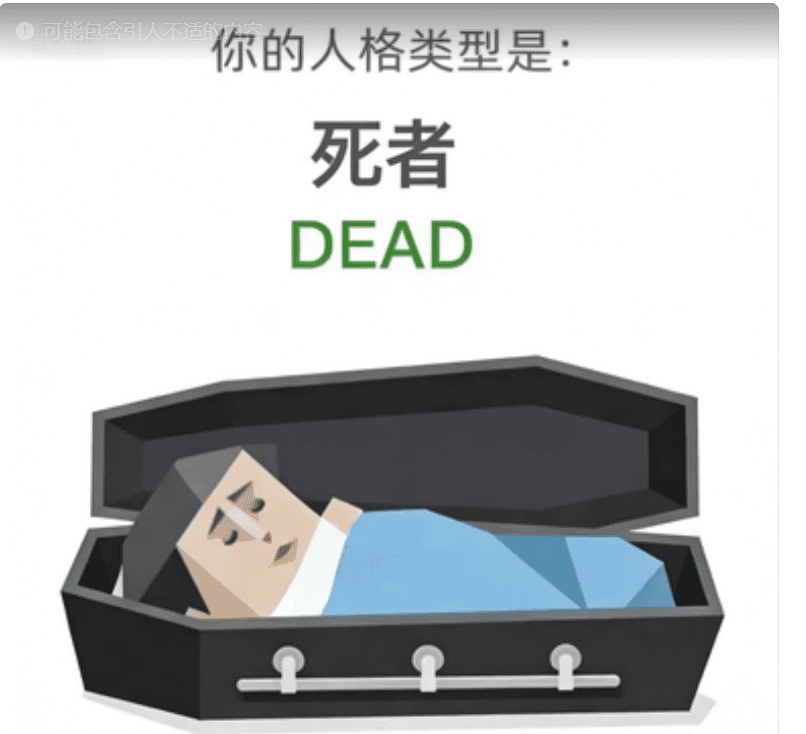

恭喜您，您测出了全中国最为罕见的人格——【DEAD — 死者】。
不过这个名字实在有点晦气，所以也可以叫：Don't Expect Any Drives。
活着但没完全活，精神处于"离线"状态，对一切提不起兴趣，主打一个麻木摆烂，日常状态就是"躺平不动"。
死者已经看透了那些无意义的哲学思考，因此显得对一切"失去"了兴趣。
他们的存在，就是对这个喧嚣世界最沉默也最彻底的抗议。
📊 维度画像
🧠 自我模型：自尊自信 L · 自我清晰度 L · 核心价值 L
自我价值感极低，认知模糊，价值观几乎不存在（"无所谓"）
💗 情感模型：依恋安全感 L · 情感投入度 L · 边界与依赖 H
极度缺乏安全感，情感投入为零，边界厚到无法穿透
🌍 态度模型：世界观倾向 L · 规则与灵活度 L · 人生意义感 L
对世界悲观到极点，规则无所谓遵不遵守，意义感为零
⚡ 行动驱力：动机导向 L · 决策风格 L · 执行模式 L
毫无动力，决策就是"不决策"，执行能量为负数
🤝 社交模型：社交主动性 L · 人际边界感 H · 表达与真实度 M
从不主动社交，边界是万里长城，表达有限但真实
🎯 核心特质
📴精神离线模式
身体在工作，灵魂已经关机。DEAD不是真的死了，只是精神上已经不在服务区。
😴终极摆烂艺术家
别人摆烂是躺平，DEAD摆烂是"我连躺都懒得躺"。对万事的回应只有两个字："随便"。
🌑虚无主义大师
活着的最大意义，就是发现自己不需要意义。DEAD不是悲观，而是超脱——超脱到对超脱这件事本身也无所谓了。
💞 人际相处
和 DEAD 相处指南
和DEAD相处，最重要的是：不要试图"拯救"他们。DEAD不需要被拯救，他们只需要被允许就这样存在着。
他们测试你的方式，就是看你会不会在他们"离线"的时候依然在那里。但请注意，他们可能连测试你都懒得测。
✅ DEAD + 不强迫他们的人 = 被允许什么都不做
❌ DEAD + 另一个DEAD = 两个离线灵魂的相对无言
DEAD是一本合上的书——
不是里面没有内容，
而是作者已经不在乎有没有人翻开。